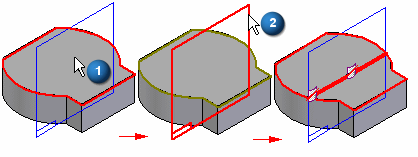
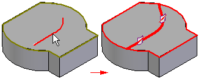
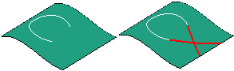

Split Face Command
Use the Split Face command  to split one or more surfaces (1) using an element (2) you define. You can select
curves, edges, surfaces, reference planes, and design bodies as the elements that
split the face.
to split one or more surfaces (1) using an element (2) you define. You can select
curves, edges, surfaces, reference planes, and design bodies as the elements that
split the face.

Splitting a face can be useful when constructing a model that you want to use for finite element analysis purposes or when you want to isolate a portion of a face so you can to apply a decal or image in a specific location.
If the element you are using to define the split location does not extend to the boundary of the face you are splitting, the Split Face command will extend the imprinted splitting curve tangentially. The original element you selected is not extended. For example, if you split a face using a sketch that consists of a line and an arc, the imprinted curve is extended linearly and tangent to the original line and arc.

If the imprinted curves intersect when they are extended, the split face feature will not succeed.

When you use a surface as the splitting element, the surface must physically intersect the surface you want to split. When you use a reference plane as the splitting element, the reference plane must theoretically intersect the surface you want to split (the reference plane is considered to be infinite in size).
When you use curves or edges as the splitting elements, such as a sketch to split a face, the splitting elements must lie on the face you are splitting. You can use the Project curve command to project the elements onto the 3-D face.